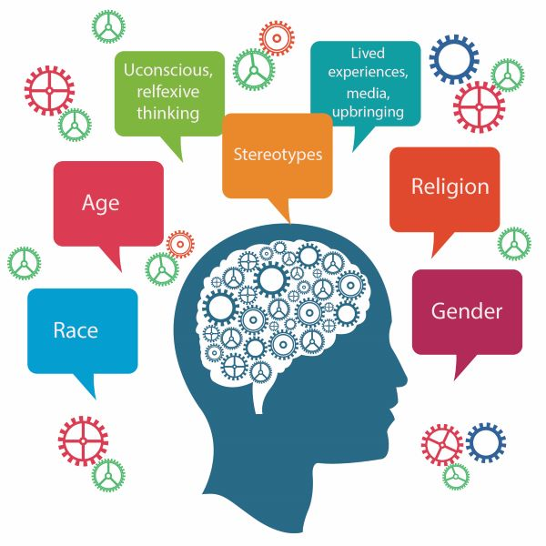
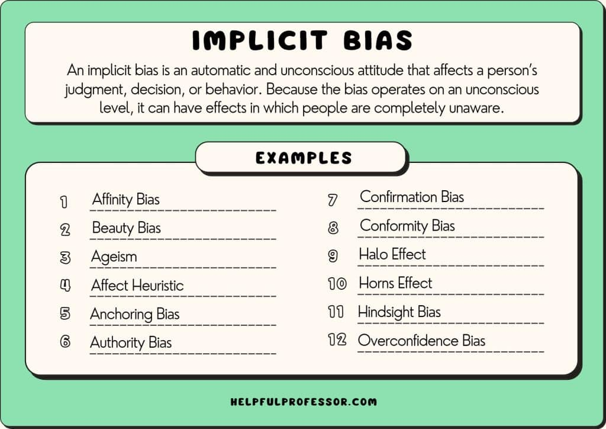
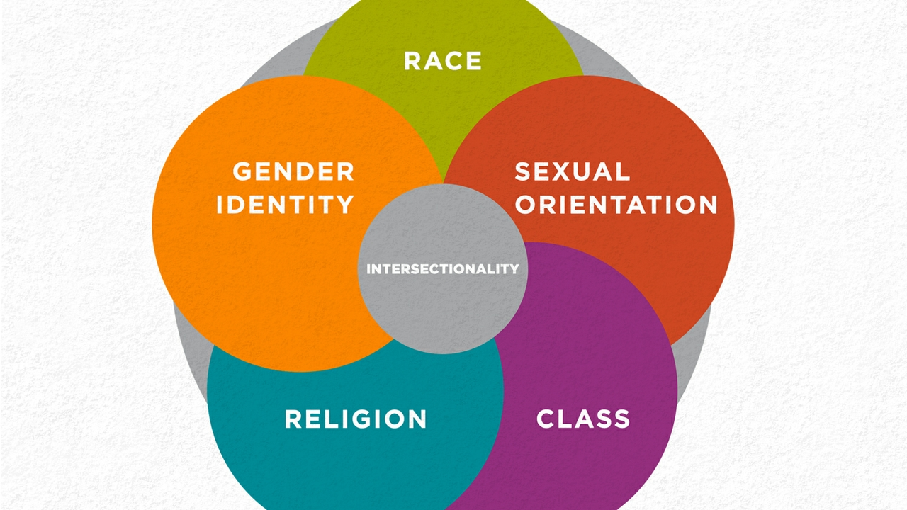

This guide is designed for those who want a clear starting point regarding intersectionality and implicit bias. Explore for quick definitions and trusted links.
Jump to: Implicit Bias IBT Intersectionality More Resources
Type a keyword to help find what you're looking for (example: "race", "gender").
Implicit Bias refers to unconscious attidue or stereotypes that affect our understanding, actions, and decisions. These biases operate automatically and can influence behavior even when we consciously reject prejudice.
The Implicit Bias Test (IBT) measures automatic associations between concepts (like race or gender) and evaluations (good/bad).
Important: The IBT is not a "good person vs. bad person" score. It is better used as a reflection tool.
Intersectionality describes how overlapping identities (race, gender, class, sexuality, etc.) shape experiences of privilege and oppression. It helps explain why one single category doesn't always capture someone's full experience.
These sources are credible options for papers, projects, and discussion posts.